نجار بالرياض لخدمات الصيانة والتركيب المنزلي
تحتاج إلى نجار لصيانة الأبواب أو فك وتركيب غرف النوم؟ نقدم خدمات النجارة المنزلية، وصيانة الأثاث والخزائن والمطابخ، وتركيب الأقفال الذكية وتجميع أثاث إيكيا في الرياض وشمال الرياض.
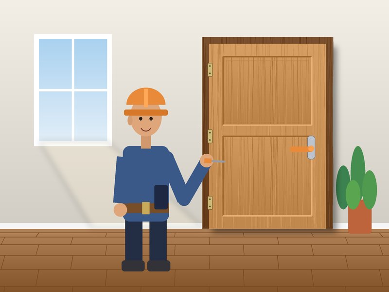
خدمات النجارة المنزلية في الرياض
اختر الخدمة المناسبة أو اتصل لشرح حالتك.
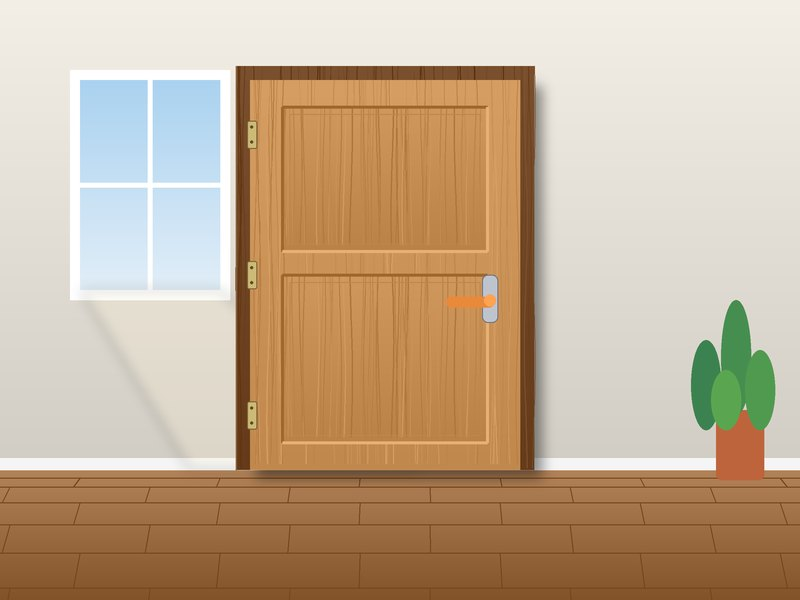
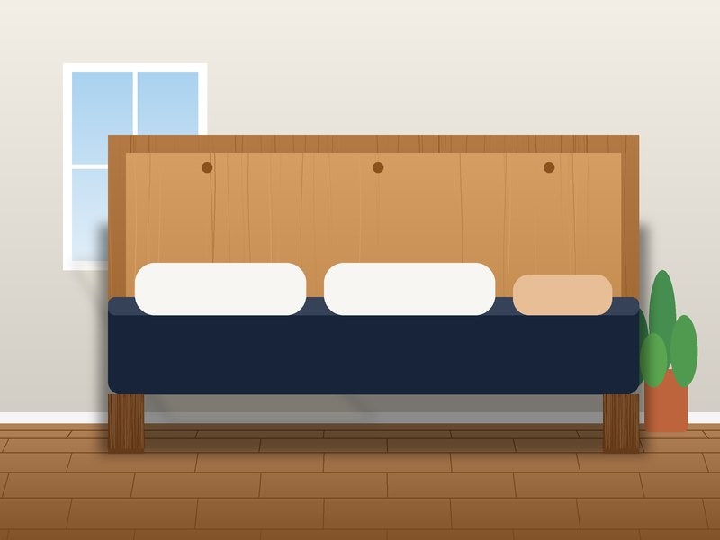
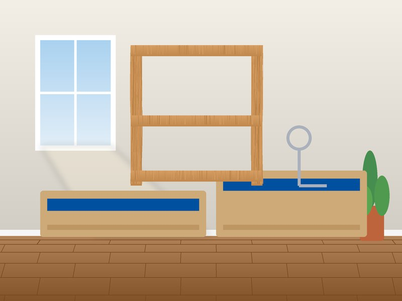
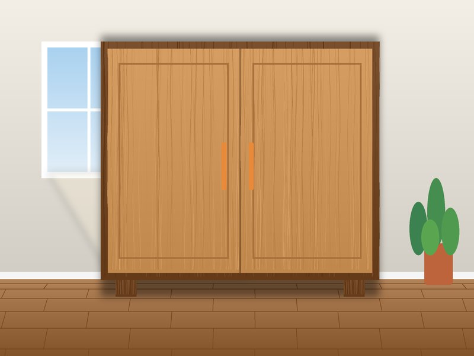
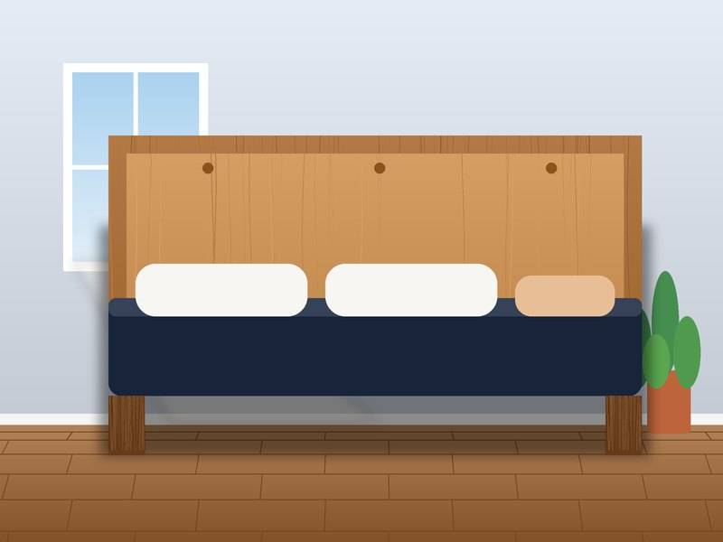
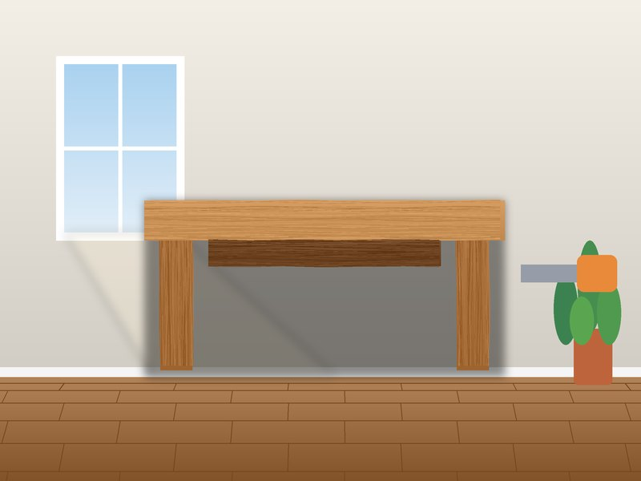
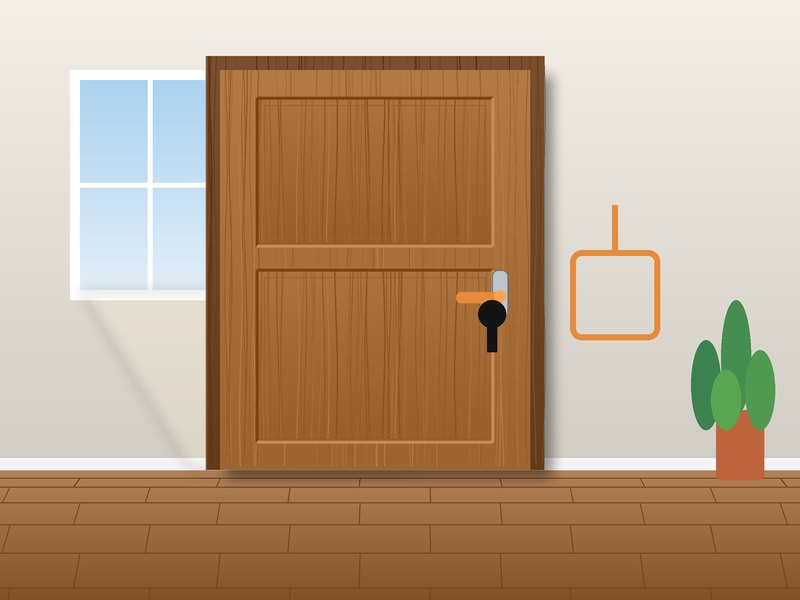
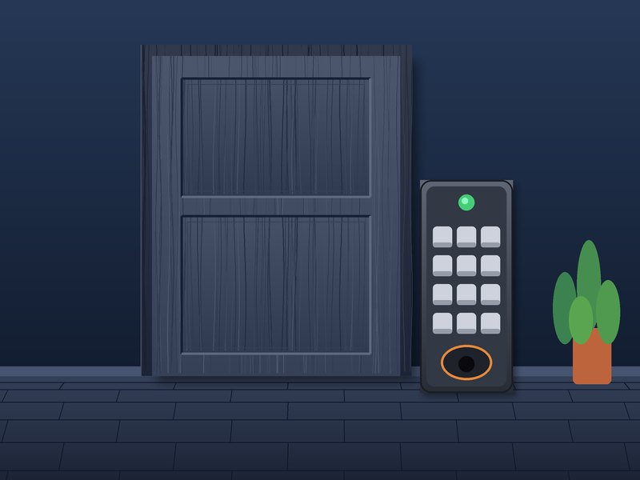
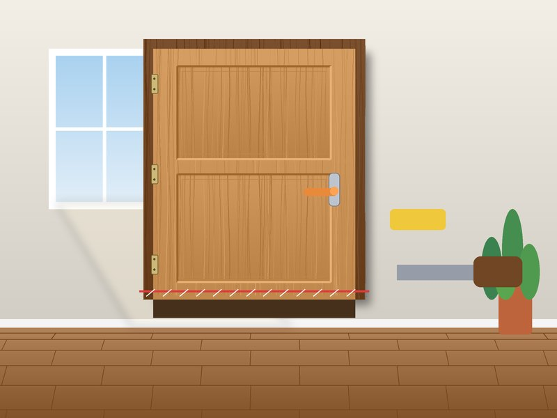
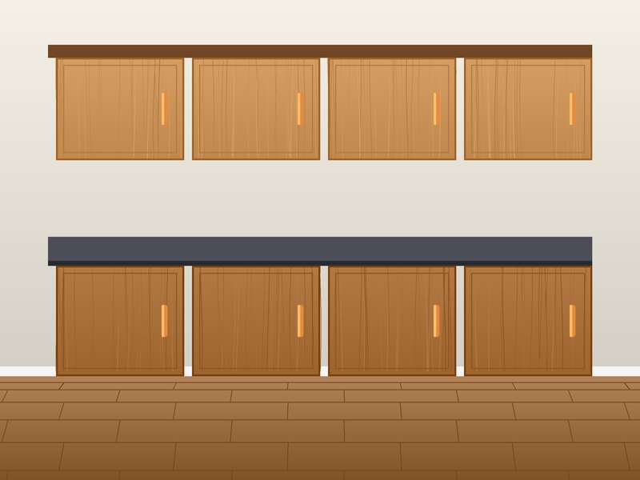
تبحث عن نجار شمال الرياض؟
نوفر خدمات النجارة والصيانة المنزلية في الرياض، بما يشمل إصلاح الأبواب والأثاث والخزائن، وفك وتركيب غرف النوم، وتركيب الأقفال الذكية وتجميع الأثاث.
- صيانة الأبواب ووزنها
- فك وتركيب غرف النوم
- تجميع أثاث إيكيا
- تركيب الأقفال الذكية
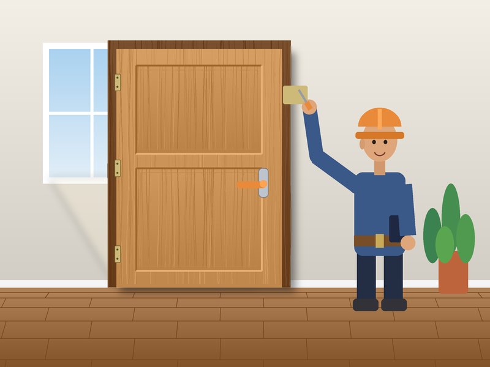
صيانة أبواب المنازل وضبط وزن الأبواب
- معالجة احتكاك الباب بالأرض.
- ضبط المفصلات عند هبوط الباب.
- إصلاح صعوبة فتح وإغلاق الأبواب.
- قص الباب وتعديل مقاسه عند الضرورة.
- صيانة مقابض الأبواب وأجزائها.
- فحص أسباب عدم انغلاق الباب بشكل صحيح.
قص الباب يتم بعد فحص نوعه ومادته والتأكد من ملاءمة التعديل.
فك وتركيب غرف النوم وصيانة الأثاث المنزلي
اطلب فك وتركيب غرف النوم، وتجميع الأثاث المنزلي وأثاث إيكيا، وإصلاح الأسرة والأدراج والخزائن والمفصلات والأجزاء الخشبية المتضررة، وفحص القطع التي تحتاج إلى إعادة تثبيت أو ضبط.
غرف النوم
فك ونقل وإعادة تركيب.
الأسرّة والأدراج
تقوية وإعادة تثبيت.
الخزائن والدولايب
ضبط الأبواب والمفصلات.
أثاث إيكيا
تجميع وتركيب القطع.
تركيب الأقفال الذكية وفتح الأبواب عند تعطلها
- تركيب الأقفال الذكية على الأبواب المناسبة.
- استبدال الأقفال القديمة بأقفال ذكية متوافقة.
- فحص مشكلات تشغيل القفل الذكي.
- التعامل مع حالات تعطل القفل أو تعذر فتح الباب.
- فحص توافق القفل مع الباب قبل التركيب.
ليست كل الأبواب متوافقة مع كل الأقفال الذكية. المساعدة في فتح الأبواب تتم في الحالات المصرح بها من مالك العقار أو المستخدم المخول.
صيانة المطابخ الخشبية ومطابخ الألمنيوم
- ضبط مفصلات أبواب الخزائن.
- إصلاح الأدراج التي لا تتحرك بسهولة.
- إعادة تثبيت المقابض والأجزاء المفكوكة.
- فحص أبواب الخزائن المتضررة.
- صيانة الأجزاء الخشبية أو الألمنيوم بحسب حالة الوحدة.
المطابخ الخشبية
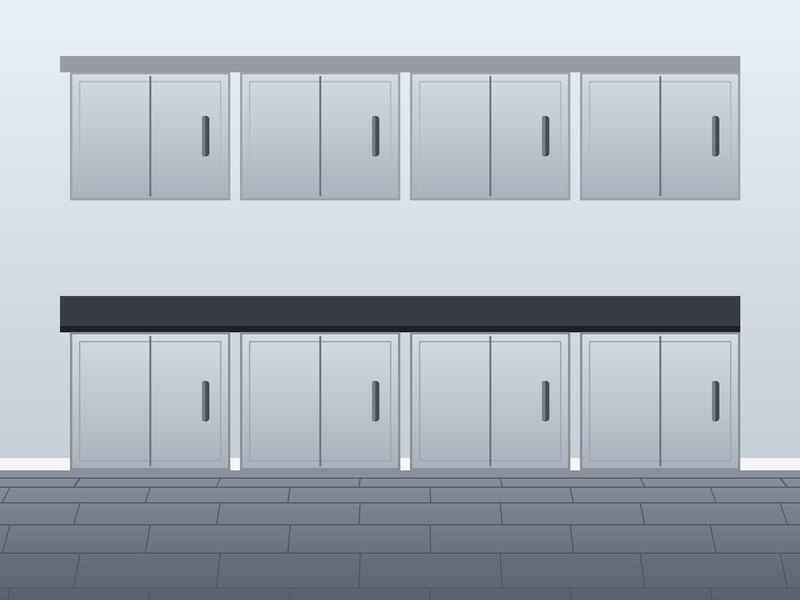
مطابخ الألمنيوم
نماذج من خدمات النجارة والصيانة
صور توضيحية للخدمات، وليست أعمالًا منفذة فعليًا.
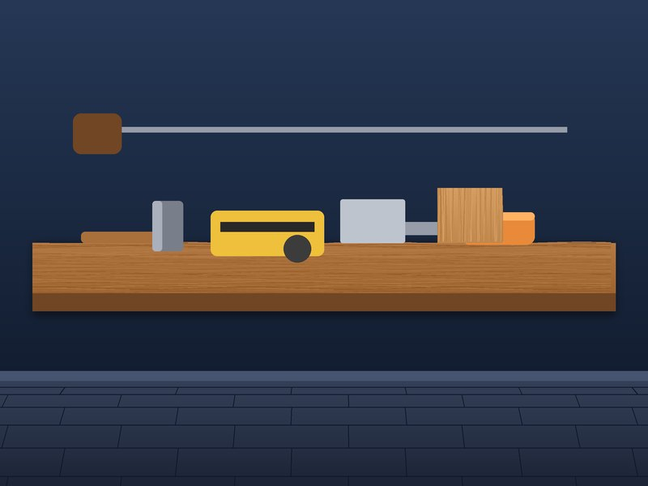
لماذا تختار خدمات النجارة لدينا؟
تنوع الخدمات
نجارة منزلية وأثاث وأبواب وأقفال ومطابخ في مكان واحد.
تواصل مباشر
اتصال أو واتساب دون وسطاء.
وضوح قبل البدء
نحدد الخدمة المطلوبة قبل بدء العمل.
فحص وحل مناسب
نفحص المشكلة ثم نحدد الحل الأنسب.
تركيب وضبط سليم
اهتمام بتثبيت الأجزاء وضبطها بصورة صحيحة.
طلب سهل
اتصل أو راسلنا عبر واتساب في أي وقت.
الأسئلة الشائعة
هل توفرون نجارًا في شمال الرياض؟
يمكن التواصل للاستفسار عن توفر الخدمة في شمال الرياض وتحديد الموقع.
هل يمكن إصلاح الباب الذي يحتك بالأرض؟
يتم فحص المفصلات ووزن الباب لتحديد سبب الاحتكاك وطريقة المعالجة المناسبة.
هل تتوفر خدمة فك وتركيب غرف النوم؟
يمكن التواصل لطلب فك وتركيب غرف النوم والأثاث المنزلي.
هل يمكن تركيب قفل ذكي على باب موجود؟
يعتمد ذلك على نوع الباب ومقاساته وتوافقه مع القفل المطلوب.
هل تتوفر صيانة المطابخ الخشبية والألمنيوم؟
يمكن طلب فحص وصيانة وحدات المطابخ بحسب نوعها وحالة الأجزاء المتضررة.
هل يمكن فتح باب مغلق أو قفل ذكي متعطل؟
يمكن التواصل لشرح المشكلة وتحديد إمكانية تقديم المساعدة بعد التحقق من صلاحية طلب فتح الباب.
كيف يمكن طلب الخدمة؟
عبر الاتصال بالرقم 0540923506 أو التواصل من خلال واتساب.
تحتاج إلى نجار بالرياض؟
تواصل الآن للاستفسار عن صيانة الأبواب والأثاث والخزائن والمطابخ، أو فك وتركيب غرف النوم وتجميع أثاث إيكيا.